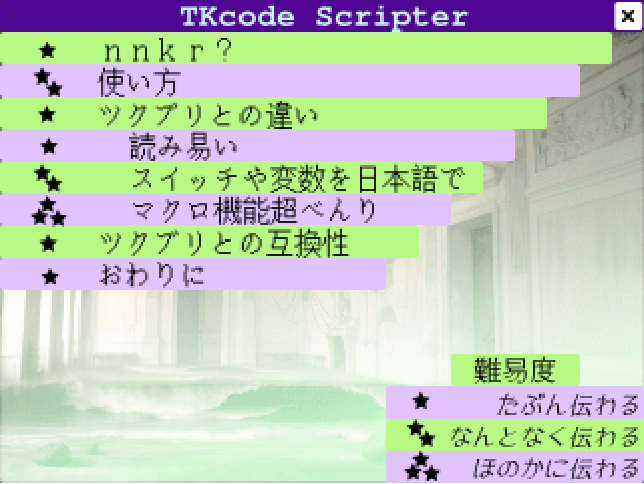

保存資料：2019-01-29の公開ページを再生しています。原HTMLと画像の載荷は保存済みです。
 |
|
| 作者：蒔いた種 | |
| ツクール：2000 | |
| ジャンル：講座+ツール | |
| 配信/投稿：よしなに | |
| 作者コメント： 誰かがつくったTKcode Scripterの紹介講座と 私が多少弄ったTKSc本体のセットになります (テキストエディタでtktkできる便利なツールをありがとう！) 伝わらないことが発覚したので ターゲットと規模を絞る形でつくりなおして再うp 旧verが気になる方はShift+スタートで |
|
| 管理人コメント： 思いのほかマジな講座ゲーに！ |
|
| ダウンロード(829KB) / 感想掲示板 | |
| 前の作品 / 次の作品 / TOPへ戻る | |